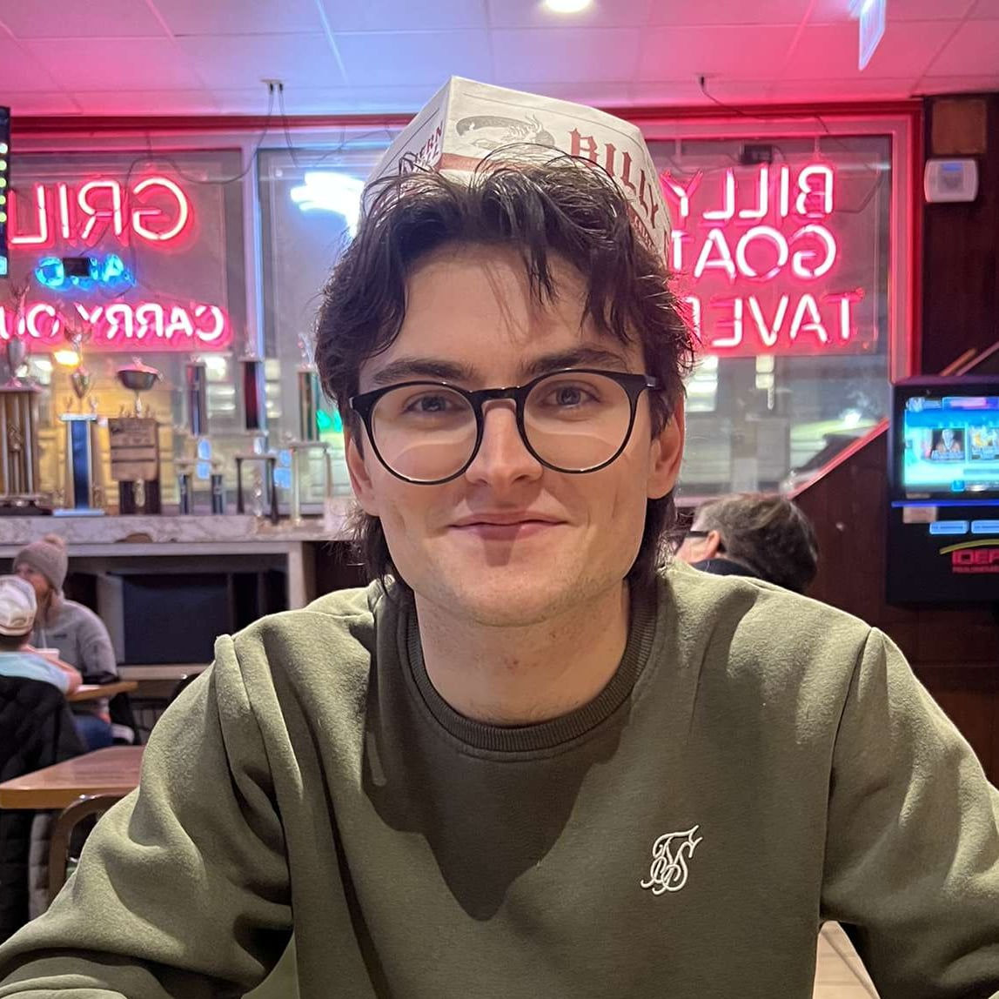

Kevin Allen

Contact Information
Kevin Allen
School of Mathematical Sciences
University College Cork
Email: kallen at ucc dot ie
Curriculum Vitae
Supervisor: Robert Osburn
Research Interests
Knot Theory, Number Theory, Modular Forms, Combinatorics, Projective Geometry
Publications
- K. Allen, R. Osburn and M. Storzer, “Generalized rank deviations for overpartitions”, preprint.
- K. Allen and R. Osburn, “Unimodal sequences and mixed false theta functions”, Advances in Mathematics, 473 (2025), Paper No. 110293.
- K. Allen and J. Sheekey, “On translation hyperovals in semifield planes”, Designs, Codes and Cryptography, 93 (2025), no. 2, 429–442.
Teaching (TA/ Tutor Roles)
MATH 10200 Matrix Algebra
MATH 10210 Foundations of Maths for Computer Science I
MATH 10030 Maths for Business
MATH 10350 Calculus for Mathematical and Physical Sciences
MATH 20320 Quantitative Methods in Business
MATH 20300 Linear Algebra 2 for the Math Sci
MATH 20060 Calculus of Several Variables
ACM 10060 Applications of Differential Equations
ACM 30030 Multivariable Calculus for Engineering II
MST 30070 Differential Geometry
Recent and Upcoming Talks
Canadian Number Theory Association Meeting, Fields Institute, June 2024 (Video of talk)
32èmes Journées Arithmétiques, Université de Lorraine, July 2023
35th Automorphic Forms Workshop, LSU, May 2023
Workshop on Integer Partitions, Nesin Mathematics Village, June 2022
Short PhD Talks, UCD Mathematical Society, Nov 2021
Recent and Upcoming Conferences
Building Bridges: 6th EU/US Summer School & Workshop on Automorphic Forms and Related Topics (BB6)
School and Workshop on Automorphic Forms and Related Topics, CIRM, September 2024
Canadian Number Theory Association Meeting, Fields Institute, June 2024
32èmes Journées Arithmétiques, Université de Lorraine, July 2023
35th Automorphic Forms Workshop, LSU, May 2023
Ramanujan and Euler: Partitions, mock theta functions, and q-series, Online Number Theory School, July 2022
Workshop on Integer Partitions
, Nesin Mathematics Village, June 2022
2022 NSF-CBMS Regional Research Conferences in the Mathematical Sciences:
Ramanujan’s Partition Congruences, Mock Theta Functions, and Beyond, University of Texas RGV, May 2022
Funding and Awards
UCD Research Demonstratorship 2021
UCD Casey Medal 2020
UCD Stage 3 Scholar 2018
UCD Entrance Scholar 2016
Theses
- PhD Mathematics: "q-Series and Modularity"
- MSc Mathematical Science: "Hyperovals, Semifields and Cherowitzo's Conjecture"
- BSc Mathematics: "Semifields: A Classification Problem"